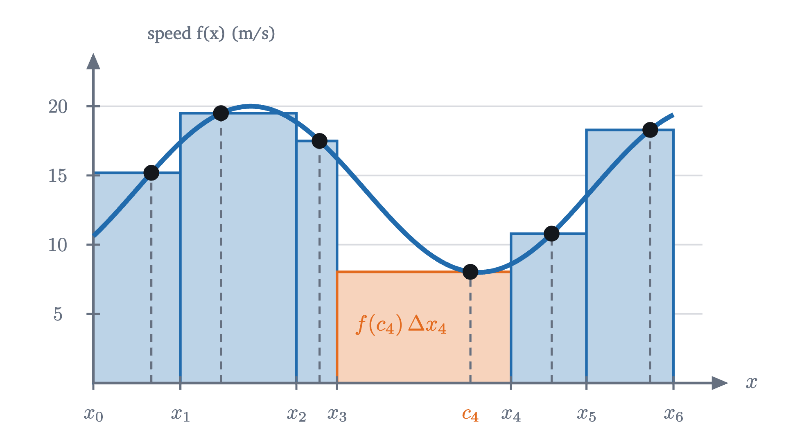
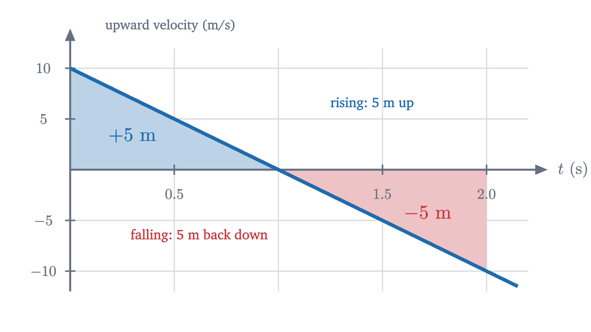

What is an integral? Adding up to get area
Distance from a changing speed, found by slicing time into pieces and adding. The definite integral is the limit of those sums, defined precisely and computed.
AssumesWhat is a derivative? Speed at a single instantWhat is a limit? The epsilon-delta definition, explained
The odometer in your car is broken, but the speedometer works. You drive for ten seconds, watching the needle wander between 8 and 20 meters per second. From the speedometer readings alone, can you work out how far you went?
If the needle had sat still, the answer would be easy: at a steady 15 m/s for 10 s you cover $15 \times 10 = 150$ meters. But the needle moved, so there is no single speed to multiply by. Use the highest reading and you overestimate; use the lowest and you underestimate. This is the mirror image of the problem in lesson 1. There we knew the distance at every moment and wanted the speed at one instant. Here we know the speed at every instant and want the distance. The answer to that question is called the integral, and like the derivative it starts as a simple idea and ends as a limit.
Distance is an area
Start with the steady case and draw it. On a graph of speed against time, a constant speed is a horizontal line, and “speed times time” is the height of that line times the width of the time interval. That product is the area of the rectangle under the line. The units agree: a height in meters per second times a width in seconds is an area in meters.
For a case where the speed changes, take the ball from lesson 1. Dropped from rest, it has fallen $s(t) = 5t^2$ meters after $t$ seconds, and we found its speed by differentiating: $v(t) = 10t$ meters per second. Forget for now that we know $s$. Given only $v(t) = 10t$, how far does the ball fall in the first 2 seconds?
Multiplying one speed by 2 seconds fails whichever speed we pick. The starting speed gives $0 \times 2 = 0$ m and the final speed gives $20 \times 2 = 40$ m. The trouble is the same as in lesson 1, where the speed changed during the interval, and so is the repair: use shorter intervals, so that the speed has less time to change. Cut the 2 seconds into four slices of half a second. Within one slice the speed changes by only 5 m/s, so pretending it is constant there is a smaller lie.
Because the ball only ever speeds up, its speed at the start of a slice is the lowest it has during that slice, and its speed at the end is the highest. So the first sum is a guaranteed underestimate and the second a guaranteed overestimate:
Pause and try
Cut the 2 seconds into eight slices of a quarter second and compute both sums. How wide is the gap between them now?
Show answerHide answer
The start speeds are $0, 2.5, 5, \dots, 17.5$, which add to $70$, so the lower sum is $0.25 \times 70 = 17.5$ m. The end speeds are $2.5, 5, \dots, 20$, which add to $90$, so the upper sum is $0.25 \times 90 = 22.5$ m. The gap has gone from 10 m to 5 m. Halving the slices halved it.
Why the gap closes
The estimates are trapping the distance from both sides, and the trap is tightening. To see how fast, look at what the gap is made of. On each slice, the upper rectangle exceeds the lower one by a small rectangle sitting on top of it. Slide all of those small rectangles sideways into one column.
The small rectangles have the same width, one slice, and their heights are the amounts by which the speed rises during each slice. Stacked, those rises add up to the total rise in speed from $t = 0$ to $t = 2$, which is 20 m/s, however many slices there are. With $n$ slices each of width $\frac{2}{n}$ seconds,
Pause and try
How many slices are needed to make the gap smaller than 10 centimeters? Smaller than a millimeter?
Show answerHide answer
We need $\frac{40}{n} < 0.1$, so $n > 400$. For a millimeter, $\frac{40}{n} < 0.001$ needs $n > 40\,000$. Any tolerance can be met by slicing finely enough, which is the pattern of a limit.
So the gap can be made smaller than any tolerance. The distance is caught between two sums that can be brought as close together as we please, and there is room for only one number between all of them.
Finding the number exactly
For the ball we can find that number, because the sums have a formula. With $n$ slices, the $k$-th slice ends at time $\frac{2k}{n}$, where the speed is $10 \cdot \frac{2k}{n}$. The upper sum is
The sum of the first $n$ whole numbers is $\frac{n(n+1)}{2}$. (Write the sum forwards and backwards and add: each of the $n$ columns totals $n + 1$, and that counts everything twice.) Therefore
These agree with what we computed: $n = 4$ gives 25 and 15, and $n = 8$ gives 22.5 and 17.5. The only number that is at least $20 - \frac{20}{n}$ and at most $20 + \frac{20}{n}$ for every $n$ is 20. The ball falls 20 meters in 2 seconds, and that is $s(2) = 5 \cdot 2^2$. We have recovered the distance from the speed alone.
The picture confirms it. The region under the line $v = 10t$ from 0 to 2 is a triangle with base 2 and height 20, and its area is $\frac{1}{2} \cdot 2 \cdot 20 = 20$. The rectangles were closing in on the area under the graph.
The definition of the integral
The ball was a kind case in two ways: its speed only increased, so the start and end of each slice gave the extremes, and we cut the time into equal slices. The car’s speed rises and falls. A definition that covers it should not care where in each slice the speed is read, or whether the slices are equal. It should only require them to be short.

This is the tolerance game of the lesson on limits, played with sums. You name a tolerance $\varepsilon$. I answer with a fineness $\delta$, and my claim is that every way of slicing more finely than $\delta$ and every way of sampling gives a sum within $\varepsilon$ of $I$. As with limits, there can be at most one such number $I$: two different candidates could not both be within half their distance of the same sum.
The notation records the construction. The sign $\int$ is a stretched letter S, for “sum”. The product $f(x)\,dx$ recalls a typical term, a height $f(c_k)$ times a small width $\Delta x_k$. The numbers $a$ and $b$ are the limits of integration. The letter $x$ is a placeholder, like the index $k$ in a sum, so $\int_a^b f(t)\,dt$ means the same thing. If $f$ is a speed in m/s and $x$ a time in s, the integral is in meters.
Is the ball’s 20 meters an integral in this demanding sense? We only checked equal slices sampled at their ends. The full statement is true, and the proof uses the function $5t^2$ in a way that is worth watching.
Step 2 is where the answer came from. The true distance fallen during a slice, $5x_k^2 - 5x_{k-1}^2$, sat between that slice’s rectangles, and adding the true distances gave the total with no error. We could do this because we already knew a function, $5t^2$, whose rate of change is $10t$. Whether that can always be arranged is the subject of the next lesson.
Without such a function in hand, how do we know an integral exists at all? For the functions calculus mostly deals with, a theorem settles it.
We will use this theorem without proving it. The proof belongs to a course in real analysis, where it rests on the fact that a continuous function on a closed interval is uniformly continuous (the Heine–Cantor theorem): one $\delta$ controls the variation of $f$ across every slice at once. It is believable from what we saw. For the ball, the gap between upper and lower sums was a stack of small rises times a slice width. For a continuous function, the rise and fall within each slice can be made small everywhere by slicing finely, and the same squeeze results.
The theorem makes computation practical. Once we know the integral exists, every sequence of Riemann sums whose mesh shrinks to 0 must approach it, so we may pick the most convenient one: equal slices, sampled at the right end.
When the function goes negative
Nothing in the definition asks $f$ to be positive. Where $f(c_k) < 0$, the term $f(c_k)\,\Delta x_k$ is negative, and the sum counts that rectangle against the total.
Pause and try
A ball is thrown straight up at 10 m/s, so its upward velocity is $v(t) = 10 - 10t$ m/s. Compute the Riemann sums for $v$ on $[0, 2]$ with four equal slices, sampling first at the left ends and then at the right ends. What do you expect $\int_0^2 v(t)\,dt$ to be, and what would that mean?
Show answerHide answer
The slices have width $0.5$. Left ends: $v = 10, 5, 0, -5$, giving $0.5 \times 10 = 5$. Right ends: $v = 5, 0, -5, -10$, giving $0.5 \times (-10) = -5$. The integral is trapped between and by symmetry should be 0. It means that after 2 seconds the ball is back at the height it was thrown from.

So the integral is a signed area: area above the axis minus area below it. For a velocity this is the right bookkeeping, because the integral of velocity is the net change in position, with motion backwards undoing motion forwards. The ball travels 10 meters in total and ends where it began. If you want the total distance, integrate the speed $|v(t)|$ instead.
Three properties we will need
The integral inherits its rules from sums. These three are used constantly, and the next lesson depends on the second and third.
Property 2 is the picture of a region caught between a short rectangle of height $m$ and a tall one of height $M$. Two conventions extend the notation: $\int_a^a f(x)\,dx = 0$, and $\int_b^a f(x)\,dx = -\int_a^b f(x)\,dx$ when the limits are written backwards. With them, additivity holds for $a$, $b$, $c$ in any order.
Functions with no integral
The hypothesis of continuity can be weakened but not dropped. Let $D(x) = 1$ when $x$ is rational and $D(x) = 0$ when $x$ is irrational. Every slice of every partition of $[0, 1]$ contains both kinds of number (a fact about the real numbers that we quote). Sampling at rational points gives a Riemann sum of $\sum 1 \cdot \Delta x_k = 1$, and sampling at irrational points gives 0, however fine the mesh. No number $I$ is within $\frac{1}{2}$ of both, so $D$ is not integrable. The definition also fails for unbounded functions such as $\frac{1}{x}$ on $[0, 1]$ (with any value assigned at 0): the sample point in the first slice can be chosen to make the sum as large as you like.
Check yourself
Using two equal slices sampled at their right ends, what is the Riemann sum for $\int_0^2 x^2\,dx$?
What was hard
The idea of slicing and adding is ancient; Archimedes found areas this way. The hard part was saying what the sums approach without appealing to “infinitely thin” rectangles, and Riemann’s definition of 1854 does it with the same tolerance game as the limit. Notice also how much work one integral took. We needed a formula for $1^2 + 2^2 + \dots + n^2$ just to integrate $x^2$. The proof for the ball avoided all summation by knowing a function whose derivative was the integrand, and the next lesson shows that this shortcut is a theorem.
Problems
The first two repeat the lesson’s moves, the next four combine them, and the last two extend them.
Problem 1
An object moves with speed $v(t) = 3t$ m/s. Using four equal slices of $[0, 4]$, compute the lower and upper sums for the distance covered. Then find the exact distance from the area of a triangle.
Show solutionHide solution
The slices have width 1. The speed increases, so the lower sum samples at left ends: $3(0 + 1 + 2 + 3) \cdot 1 = 18$ m. The upper sum samples at right ends: $3(1 + 2 + 3 + 4) \cdot 1 = 30$ m. The region under $v = 3t$ from 0 to 4 is a triangle with base 4 and height 12, of area $\frac{1}{2} \cdot 4 \cdot 12 = 24$ m, which lies between the two sums (here exactly halfway).
Problem 2
A cart’s velocity along a track is $v(t) = 6 - 2t$ m/s. Using areas of triangles, find $\int_0^3 v(t)\,dt$ and $\int_0^5 v(t)\,dt$. How far has the cart travelled in total during the first 5 seconds?
Show solutionHide solution
The velocity is positive until $t = 3$ and negative after. From 0 to 3 the region is a triangle above the axis with base 3 and height 6: $\int_0^3 v\,dt = 9$ m. From 3 to 5 it is a triangle below the axis with base 2 and height $|v(5)| = 4$, of area 4, counted negatively. By additivity $\int_0^5 v\,dt = 9 - 4 = 5$ m: the cart ends 5 m ahead of where it started. The total distance travelled is $9 + 4 = 13$ m.
Problem 3
Compute $\displaystyle\int_0^b x\,dx$ for $b > 0$ from the definition, using equal slices sampled at their right ends.
Show solutionHide solution
The function is continuous, so the integral exists and right-end sums approach it. With slices of width $\frac{b}{n}$ and right ends $\frac{kb}{n}$,
As $n$ grows this approaches $\frac{b^2}{2}$, so $\int_0^b x\,dx = \frac{b^2}{2}$. Check: the region is a triangle with base $b$ and height $b$.
Problem 4
Compute $\displaystyle\int_0^2 x^2\,dx$ from right-end sums with equal slices. How many slices are needed before the right-end sum is within $0.01$ of the integral?
Show solutionHide solution
With width $\frac{2}{n}$ and right ends $\frac{2k}{n}$,
This approaches $\frac{4}{3} \cdot 2 = \frac{8}{3}$, so $\int_0^2 x^2\,dx = \frac{8}{3}$. Expanding, $R_n = \frac{8}{3} + \frac{4}{n} + \frac{4}{3n^2}$, so the error is $\frac{4}{n} + \frac{4}{3n^2}$. At $n = 400$ this is slightly more than $0.01$; at $n = 401$ it is $0.009975 + 0.000008 < 0.01$. So 401 slices are needed.
Problem 5
Let $f$ be increasing and continuous on $[a, b]$, and cut $[a, b]$ into $n$ equal slices. Show that the upper sum minus the lower sum equals $\bigl(f(b) - f(a)\bigr)\frac{b - a}{n}$. Use this to say how many slices guarantee an estimate of $\int_0^2 x^3\,dx$ that is within $0.001$ of the true value.
Show solutionHide solution
Because $f$ is increasing, its smallest value on a slice is at the left end and its largest at the right end. So $U - L = \sum \bigl(f(x_k) - f(x_{k-1})\bigr)\frac{b-a}{n}$. The sum of the differences telescopes to $f(x_n) - f(x_0) = f(b) - f(a)$. This is the stacked column from the lesson. For $x^3$ on $[0, 2]$ the gap is $(8 - 0) \cdot \frac{2}{n} = \frac{16}{n}$. The integral lies between $L$ and $U$ (apply the bounds property on each slice and add, using additivity), and so does every Riemann sum on that partition, so any of them is within $\frac{16}{n}$ of the integral. That is below $0.001$ once $n > 16\,000$.
Problem 6
Without computing the integral, show that $2 \le \displaystyle\int_0^2 \sqrt{1 + x^3}\,dx \le 6$.
Show solutionHide solution
On $[0, 2]$ the quantity $1 + x^3$ increases from 1 to 9, so $1 \le \sqrt{1 + x^3} \le 3$. The function is continuous, so the bounds property applies with $m = 1$, $M = 3$ and $b - a = 2$: the integral lies between $1 \cdot 2 = 2$ and $3 \cdot 2 = 6$.
Problem 7
Derive the formula $1^2 + 2^2 + \dots + n^2 = \dfrac{n(n+1)(2n+1)}{6}$ by adding the identity $(k+1)^3 - k^3 = 3k^2 + 3k + 1$ over $k = 1, \dots, n$.
Show solutionHide solution
The left sides telescope to $(n+1)^3 - 1$. Writing $Q$ for the sum of squares, the right sides add to $3Q + 3 \cdot \frac{n(n+1)}{2} + n$. So
where the second equality uses $-1 - n = -(n+1)$. Dividing by 3 gives the formula. Check at $n = 3$: $1 + 4 + 9 = 14$ and $\frac{3 \cdot 4 \cdot 7}{6} = 14$.
Problem 8
Imitate the proof for $10t$ to prove from the definition that $\displaystyle\int_0^b 3t^2\,dt = b^3$ for $b > 0$. (Use $x_k^3 - x_{k-1}^3 = (x_k^2 + x_kx_{k-1} + x_{k-1}^2)\,\Delta x_k$.)
Show solutionHide solution
Take any partition of $[0, b]$ with mesh $\mu$ and any sample points, with Riemann sum $S$. Let $L = \sum 3x_{k-1}^2\,\Delta x_k$ and $U = \sum 3x_k^2\,\Delta x_k$. Since $3t^2$ is increasing for $t \ge 0$, $L \le S \le U$. Since $0 \le x_{k-1} < x_k$, each of the three terms in $x_k^2 + x_kx_{k-1} + x_{k-1}^2$ is at least $x_{k-1}^2$ and at most $x_k^2$, so
Adding over $k$, the middle telescopes to $b^3$, so $L \le b^3 \le U$. Finally
Both $S$ and $b^3$ lie between $L$ and $U$, so $|S - b^3| \le 6b^2\mu$. Given $\varepsilon > 0$, the choice $\delta = \frac{\varepsilon}{6b^2}$ works. The function $t^3$, whose derivative is $3t^2$, played the part that $5t^2$ played in the lesson.